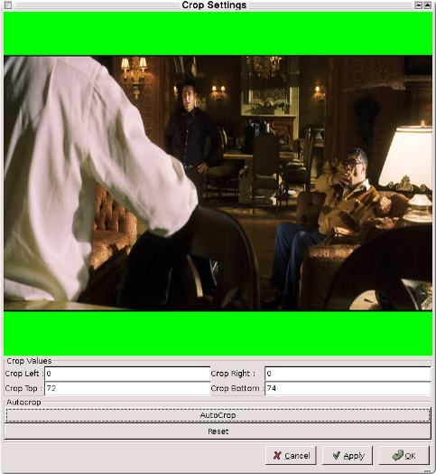
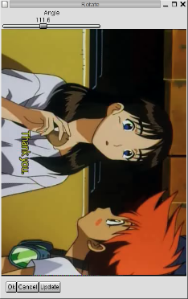

|
Video: filtres de modification des images 1.Avant-propos Cet ensemble de filtres affectent profondément la source vidéo : redimensionnement, rotation, symétrie et rognage. 2.Filtres de modification des images Ce filtre permet de rogner la vidéo, pour en supprimer une bordure noire par exemple. Les valeurs dont l'image est rognée à gauche/à droite/en haut/en bas doivent être paires. Le bouton update vous permet de visualiser quelle partie de l'image supprimée. Avec une vidéo bien propre (depuis un dvd), vous pouvez essayer le bouton Autocrop, qui risque de ne pas fonctionner avec une source contenant trop de parasites (depuis une capture). Redimensionnement / redimensionnement Mplayer
Le filtre de redimensionnement est un portage en YV12 de celui d'avisynth. Le filtre de redimensionnement Mplayer est un portage de celui de Michael Niedermayer, qui est utilisé dans mplayer. Le filtre d'avisynth est légèrement plus précis, mais celui de mplayer est trois fois plus rapide sans qu'il y ait de différence perceptible au niveau de la qualité. La boîte de dialogue de configuration est identique pour les deux filtres :
Vous pouvez saisir directement la nouvelle largeur/hauteur ainsi que l'algorithme de redimensionnement ou utiliser le curseur et le menu. Le programme vous propose trois méthodes de redimensionnement : C'est important car le format 4/3 n'a pas des pixels carrés (contrairement au PAL ou au NTSC) et si vous choisissez 1:1 -> 1:1 vous obtiendrez une image déformée. Ce filtre remplace la bordure de la vidéo par du noir pur. Cela peut servir à supprimer les parasites d'une bordure existante (avec une capture VHS par exemple). Ce filtre *AJOUTE* une bordure noire (le précédent remplace celle existante). Il est utilisé en interne par *VCD res pour redimensionner une vidéo afin d'atteindre une taille donnée sans en modifier les proportions visuelles. Ce filtre inverse le haut et le bas de la vidéo. Il peut servir avec des cartes de capture vidéo défectueuses. Ce filtre a été écrit par Tracy (consultez le fichier pour plus de renseignements) Il fait pivoter la vidéo de 90/180/270 degrés. Son auteur l'utilise avec des vidéos prises avec sa caméra en mode paysage.  |